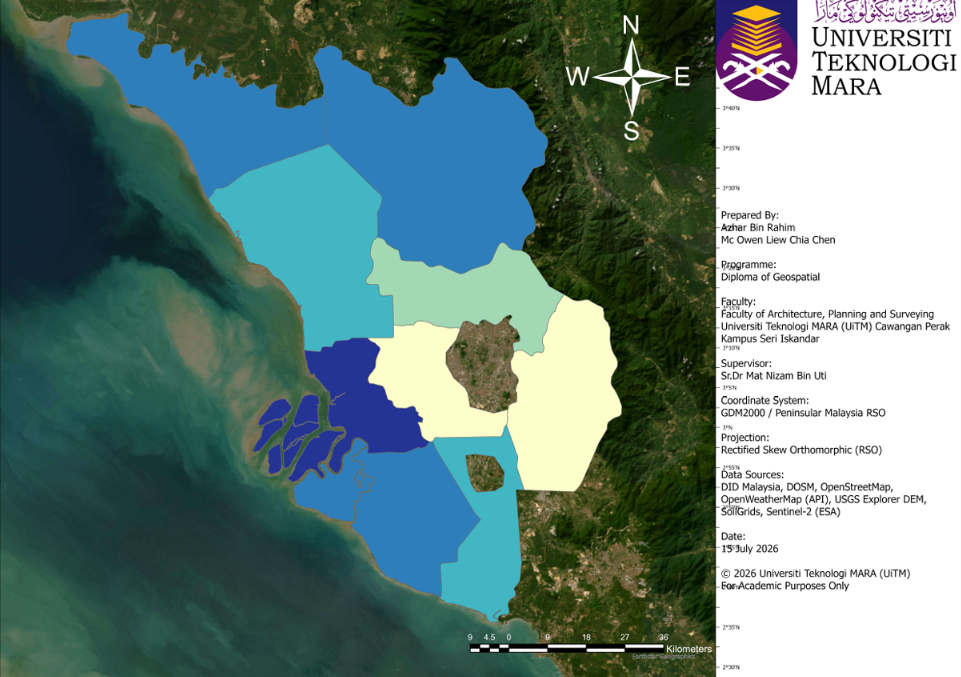
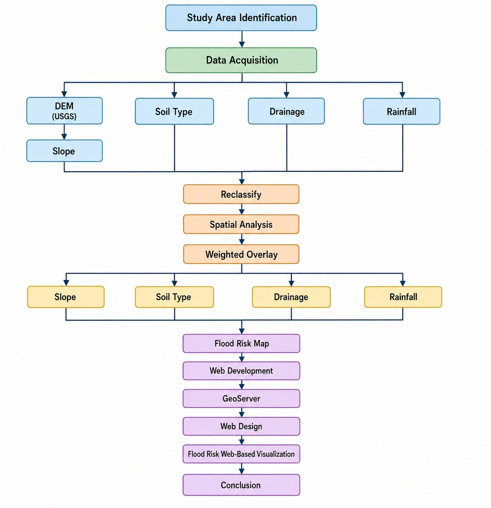

GeoFlood Dashboard is a web-based Geographic Information System (GIS) developed to visualize spatial flood risk assessment throughout Selangor. The system combines GIS spatial analysis, rainfall information, interactive web mapping, and flood preparedness recommendations into a single platform to enhance public awareness and support informed decision-making.
Flooding is one of the most common natural disasters affecting Selangor. Increasing rainfall intensity, rapid urban development, and land use changes have significantly increased flood risk in many districts. Therefore, GeoFlood Dashboard was developed to visualize spatial flood risk assessment and provide useful flood preparedness information through an interactive web-based GIS.
Floods occur regularly across several districts in Selangor, causing damage to property, infrastructure and affecting thousands of residents.
Urban growth has increased impervious surfaces, reducing natural water absorption and increasing surface runoff.
Geographic Information System (GIS) technology enables flood risk mapping through spatial analysis and weighted overlay techniques.
The dashboard integrates flood risk maps, rainfall information, district analysis and preparedness recommendations into a single platform.
The GeoFlood Dashboard was developed to achieve the following objectives in supporting flood risk assessment and public awareness in Selangor.
To analyze the flood risk in Selangor using spatial analysis.
To develop a WebGIS application for visualization of flood risk in Selangor, Malaysia.
Several issues have contributed to the increasing flood risk in Selangor and highlight the need for a centralized web-based Geographic Information System (GIS) for flood risk assessment and public awareness.
Previous studies have successfully applied GIS-based flood susceptibility assessment using methods such as the Weighted Overlay Method, Multi-Criteria Decision Analysis (MCDA), and Analytic Hierarchy Process (AHP). However, these studies mainly focus on producing flood susceptibility maps with limited interactive visualization capabilities.
Previous studies have successfully applied GIS-based flood susceptibility assessment using methods such as the Weighted Overlay Method, Multi-Criteria Decision Analysis (MCDA), and Analytic Hierarchy Process (AHP). However, these studies mainly focus on producing flood susceptibility maps with limited interactive visualization capabilities.
Flood-related factors such as rainfall, elevation, slope, soil characteristics, and land use are often analysed separately. Furthermore, many flood risk maps are available only in static formats or require specialised GIS software, limiting accessibility and reducing public understanding of flood risk.
There is a need for a web-based visualization platform that integrates GIS spatial analysis with interactive web technologies. Such a platform can improve accessibility, enhance understanding of spatial flood risk patterns, and support better decision-making for flood management and mitigation planning in Selangor.
The spatial flood risk assessment was conducted across the state of Selangor, Malaysia, covering all administrative districts included in this study.

Selangor is located on the west coast of Peninsular Malaysia and is one of the country's most developed states. Due to rapid urbanisation, increasing rainfall, and expanding urban areas, the state experiences recurring flood events that affect both urban and rural communities.
The methodology adopted in this study integrates Geographic Information System (GIS) spatial analysis and the Weighted Overlay Method to produce a spatial flood risk assessment for Selangor. Five flood conditioning factors were processed, reclassified and combined to generate the final flood risk map, which was subsequently published through the GeoFlood Dashboard.

The workflow begins with the identification of the study area, followed by data acquisition from multiple spatial datasets, including Digital Elevation Model (DEM), soil type, drainage, river, and rainfall. The DEM dataset was further processed to derive slope information. All flood conditioning factors were subsequently reclassified into standardized suitability classes before undergoing GIS spatial analysis using the Weighted Overlay Method. The resulting flood risk map was then integrated into a web-based visualization platform using GeoServer and web development technologies to produce the GeoFlood Dashboard.
GeoFlood Dashboard was developed using several GIS, database, web development and mapping technologies to perform spatial flood risk assessment and provide an interactive web-based visualization platform.
Spatial analysis, raster processing, weighted overlay and flood risk mapping.
Publish spatial datasets through WMS and WFS web services.
Integrates multiple flood conditioning factors to produce the final flood risk classification.
Interactive web mapping and spatial visualization.
Front-end web development environment.
Base map used for the interactive GIS dashboard.
Provides real-time rainfall and weather information.
Develop responsive user interface and dashboard functions.
GeoFlood Dashboard provides several integrated features to visualize flood risk information, support spatial analysis, and improve public awareness through an interactive web-based Geographic Information System.
Displays the spatial flood risk classification of Selangor using an interactive web map with navigation and visualization tools.
Provides current weather and rainfall information using the OpenWeatherMap API to improve situational awareness.
Presents flood risk statistics and analysis for each district in Selangor using maps, charts and descriptive information.
Displays the latest flood-related news to keep users informed about current events and updates.
Provides preparedness recommendations based on different flood risk levels to improve community readiness.
Explains the project background, methodology, objectives and technologies used in developing the GeoFlood Dashboard.
This project was developed as a Final Year Project (FYP) for the Bachelor of Geomatics programme at Universiti Teknologi MARA (UiTM).
Web-based Visualization of Spatial Flood Risk Assessment in Selangor, Malaysia
Universiti Teknologi MARA (UiTM)
Cawangan Perak
Faculty of Architecture, Planning and Surveying
Diploma of Geospatial Science
SR.DR MAT NIZAM BIN UTI
2025 / 2026
The GeoFlood Dashboard was developed using spatial datasets, publicly available geographic information, and web technologies. The authors would like to acknowledge the following organizations for providing valuable datasets and mapping resources.
Flood-related information and reference materials.
Base map for the GeoFlood Dashboard.
Real-time weather and rainfall information.
Digital Elevation Model (DEM) data used for slope analysis.
Soil information for flood risk assessment.
The GeoFlood Dashboard was developed using official spatial datasets, Geographic Information System (GIS) techniques, web mapping technologies, and scientific literature. This section summarises the data sources, software, methodologies, and references that support the spatial flood risk assessment conducted for Selangor.
| Dataset | Source | Purpose |
|---|---|---|
| Digital Elevation Model (DEM) | USGS Earth Explorer | Generate elevation and slope layers. |
| Soil Type | SoilGrids | Evaluate soil infiltration characteristics. |
| Rainfall | DID Malaysia & Historical Rainfall Dataset (2019–2024) | Represent rainfall intensity and distribution. |
| Drainage Network | Department of Irrigation and Drainage (DID) | Generate drainage proximity layer. |
| Land Use | PLANMalaysia | Represent land cover characteristics. |
| Administrative Boundary | OpenStreetMap / GADM | Display Selangor district boundaries. |
Digital Elevation Model (DEM) was processed to derive slope, representing terrain conditions influencing surface runoff.
Historical rainfall data and weather observations were used to represent rainfall intensity across Selangor.
Soil characteristics were analysed to represent infiltration capacity and water retention.
Distance to drainage network was calculated to represent flood conveyance efficiency.
Land use data represented urban development, vegetation, agriculture, and other land cover conditions.